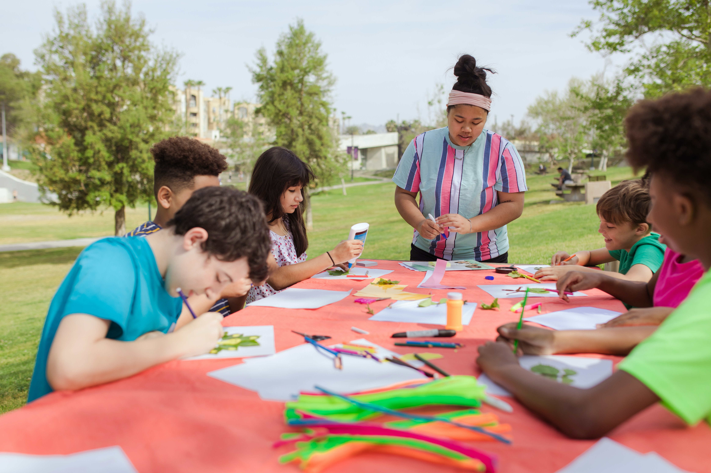
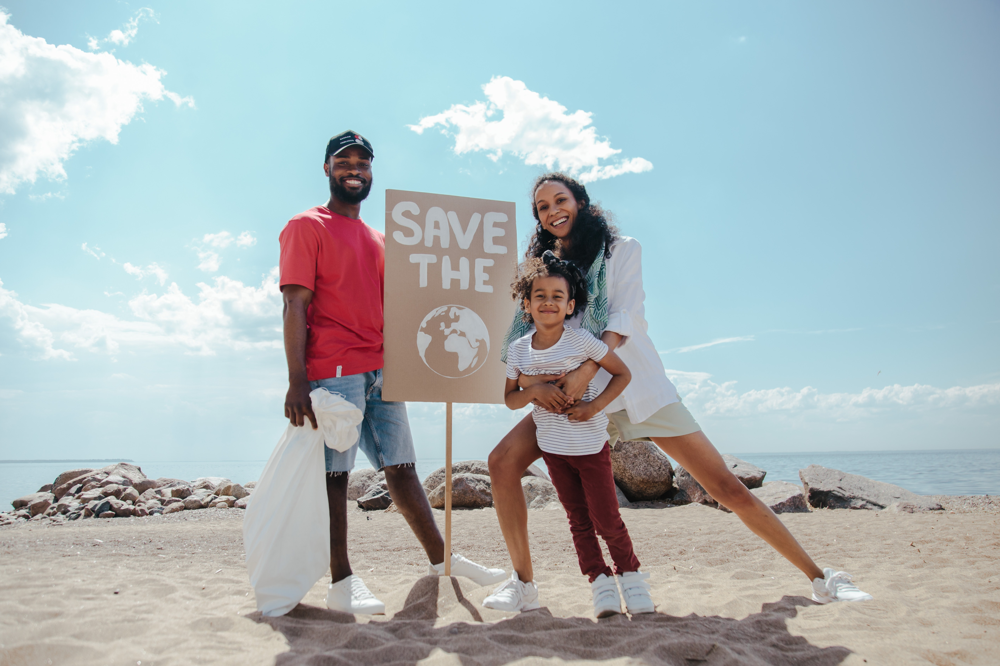

1st December, 2021
Forest Clean during Pandemic
Forests support over 86 million green jobs and the livelihoods of millions of others. More than 90% of those who live in extreme poverty are forest-dependent. Wood from sustainably-managed forests can support a range of industries, including paper production and construction. Investment in forest restoration can therefore also help create more jobs – something which could prove particularly relevant post-pandemic.
The Director-General of the UN’s Food and Agriculture Organization (FAO), Qu Dongyu, underscored how restoring forests and managing them sustainably, benefits both people and the planet.
This investment will also contribute to economic recovery from the pandemic, he added, as “forest restoration activities create green jobs, generate incomes, improve human health and increase human security.”
While COVID-19 has been “a harsh wake-up call”, it also presents a unique opportunity to recover better and stronger, according to Mr. Liu.
“Let us use this International Day of Forests to send a strong message,” he said. “Let us restore and protect our forests, our planet, and all its vital ecosystems for generations to come."

6th January, 2022
Do it YourSelf with Kids
Creativity is the act of turning new and imaginative ideas into reality. Creativity is characterised by the ability to perceive the world in new ways, to find hidden patterns, to make connections between seemingly unrelated phenomena, and to generate solutions
The creative process is the act of making new connections between old ideas or recognizing relationships between concepts. Creative thinking is not about generating something new from a blank slate, but rather about taking what is already present and combining those bits and pieces in a way that has not been done previously.

4st October, 2021
Ocean Clean in Thailand
Bangkok (Thailand) – November 7, 2018 – With the help of The Tourism Authority of Thailand (TAT) invites all nature-loving divers to help preserve Thailand’s marine environment through the activity “Upcycling the Oceans”. This is an online activity in which Thai and foreign divers share their experiences of scuba diving and ocean conservation in Thailand through the website www.tourismthailand.org/7greens, to educate people about the situation and inspire young divers to preserve the marine life and the beauty of the underwater world in Thailand.
All entrants have a chance to win special prizes from leading companies, such as a 44,600 Baht gift voucher from the Similan Seven Sea Club, a 39,000 Baht gift voucher from Beach Club by Haadtien Scuba Club, and more!
How they participate activity
1. Participants must register through our website or TAT website
2. All participants must own a valid diving license. The participants must express briefly their experience of diving and marine conservation. 3. Then our committee announced the names of nine winners through TAT website